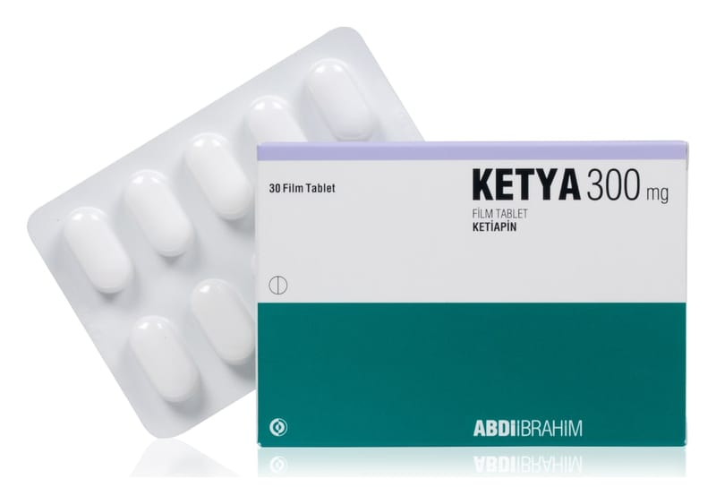

Ketya 300 mg Film Kaplı Tablet, 30 Adet

Ne için kullanılır
KT · Bölüm 1KETYA 300 mg, 30 ve 60 film kaplı tablet içeren blister ambalajlarda kullanıma sunulmuştur. Film kaplı tabletler, beyaz renkli oblong tabletlerdir.
KETYA etkin maddesi ketiapin olan, antipsikotikler (psikiyatrik hastalıklarının tedavisinde kullanılan ilaçlar) olarak adlandırılan ilaç grubuna ait bir ilaçtır. KETYA aşağıdaki hastalıkların tedavisinde etkilidir:
• Bipolar bozukluğa eşlik eden majör depresif ataklar: Bu durumda kendinizi üzgün hissedersiniz. Karamsarlık, suçluluk, enerji kaybı, iştah azalması ve uykusuzluk hissedebilirsiniz. • Bipolar bozuklukta orta-ileri derece mani atakları: aşırı coşkulu, heyecanlı, mutlu, meraklı veya hiperaktif olursunuz (uykuya her zamankinden daha az ihtiyaç duyar, daha konuşkan olur, düşüncelerin veya fikirlerin hızla akıp geçtiğini fark edebilirsiniz) ya da saldırgan veya yıkıcı tavırlar dahil karar verme yeteneğinizde zafiyet oluşur. • Daha önce ketiapin tedavisine cevap vermiş olan bipolar bozukluğu olan hastalarda mani ve depresif atakların nüks etmesinin önlenmesinde. • Şizofreni: gerçekte var olmayan şeyleri duyabilir veya hissedebilirsiniz; gerçek olmayan şeylere inanırsınız ya da garip şüphe, endişe, kafa karışıklığı, suçluluk, gerginlik, can sıkıntısı hissedersiniz.
Kendinizi iyi hissetseniz bile doktorunuz KETYA reçetenizi yazmaya devam edebilir. 2.KETYA’ yı kullanmadan önce dikkat edilmesi gerekenler KETYA bellek ve düşünce bozukluğuna yol açan beyin fonksiyon kaybı (demans) olan, ileri yaştaki hastalar tarafından kullanılmamalıdır. Bunun nedeni, KETYA’nın da içinde bulunduğu gruptan olan ilaçların, demansı olan yaşlı hastalarda inme ve bazı vakalarda ölüm riskini artırabilmesidir. KETYA ve bu sınıftaki diğer ilaçlarla yapılan klinik çalışmalarda, demansı ve davranışsal bozukluğu olan yaşlı hastalarda ölüm riskinde artış raporlanmıştır. KETYA bu tür kullanımda onaylı değildir.
KETYA’yı aşağıdaki durumlarda KULLANMAYINIZ:
Eğer; • Etkin madde ketiapine veya KETYA’nın herhangi bir bileşenine (yardımcı maddeler listesine bakınız) alerjikseniz, • Aşağıdaki ilaçlardan herhangi birini kullanıyorsanız: -HIV tedavisinde kullanılan bazı ilaçlar (didanozin, lopinavir, ritonavir gibi HIV-proteaz inhibitörleri), Antidepresan ilaçların özellikle çocuklar ve 24 yaşına kadar olan gençlerdeki kullanımlarının intihar düşünce ya da davranışlarını artırma olasılığı bulunmaktadır. Bu nedenle özellikle tedavinizin başlangıcı ve ilk aylarında veya ilaç dozunun artırılma/azaltılma ya da kesilme dönemlerinde sizde ortaya çıkabilecek huzursuzluk, aşırı hareketlilik gibi beklenmedik davranış değişikliklerine ya da intihar olasılığına karşı doktorunuz sizi yakından takip edecektir. Durumunuzda herhangi bir kötüleşme olursa, intihar düşüncesi veya davranışı ya da kendinize zarar verme düşüncesi ortaya çıkarsa en kısa zamanda doktorunuzu arayınız. KETYA’nın 18 yaşın altındaki hastalarda kullanımı önerilmez.
-Mantar enfeksiyonlarına karşı kullanılan azol sınıfı ilaçlar (ketokonazol, flukonazol, itrakonazol gibi), -Enfeksiyonların tedavisinde kullanılan eritromisin, klaritromisin gibi bazı ilaçlar, -Nefazodon gibi bazı depresyon ilaçları, Eğer emin değilseniz KETYA almadan önce doktorunuza veya eczacınıza danışınız.
KETYA’yı aşağıdaki durumlarda DİKKATLİ KULLANINIZ:
Eğer; • Sizde veya ailenizden birisinde kalp hastalığı varsa ya da geçmişte olduysa (örneğin kalp ritim bozukluğu, kalp kasının zayıflığı veya kalp iltihaplanması varsa ya da kalp atışınıza etki eden herhangi bir ilaç kullanıyorsanız), • Tansiyonunuz düşükse, • Felç geçirdiyseniz ve özellikle ileri yaştaysanız, • Karaciğer hastalığınız varsa, • Kriz geçirmişseniz (nöbet), • Şeker hastalığınız (diyabet) veya şeker hastası olma riskiniz varsa. KETYA kullandığınızda doktorunuz kan şeker seviyelerinizi kontrol edebilir. • Geçmişte ilaçlardan kaynaklanan veya onlarla ilgisi bulunmayan herhangi bir nedenle akyuvar (beyaz kan hücresi) sayınız düşük bulunduysa, • Demansı (beyin işlev kaybı) olan yaşlı birisi iseniz. KETYA kullanılmamalıdır; çünkü KETYA’nın ait olduğu grup ilaçlarla, demansı olan yaşlı kişilerde inme riskini ya da bazı vakalarda ölüm riskini artırabilir. • Parkinson hastalığı/parkinsonizmi olan yaşlı bir kişiyseniz, • Bu grup ilaçlar kan pıhtısı oluşumu ile ilişkili olduğundan, sizde ya da ailenizde damar içinde kan pıhtılaşma öyküsü varsa, • Normal gece uykusundayken kısa periyotlarda nefes durması (uyku apnesi olarak ifade edilir) durumu yaşıyorsanız veya yaşadıysanız ve aldığınız ilaçlar normal beyin aktivitelerini yavaşlatıyorsa (depresanlar), • Mesanenizi tamamen boşaltamayacağınız bir durumunuz (üriner retansiyon), büyüyen bir prostatınız, bağırsaklarınızda tıkanıklık veya gözünüzde basınç artışı varsa. Bu durumlar, bazen bazı tıbbi durumların tedavisinde sinir hücrelerinin işlevini etkileyen ilaçlardan ("anti-kolinerjikler") kaynaklanır. • Toplar damarlarınızda bir probleminiz varsa. KETYA’nın, seyrek olarak toplar damar tıkanıklığına neden olma riski bulunmaktadır. Tedavi öncesinde ve sırasında tüm risk faktörleri belirlenmeli ve gerekli önlemler alınmalıdır. • Alkol veya ilaç kötüye kullanımı öykünüz varsa.
KETYA’yı kullandıktan sonra aşağıdaki belirtilerden herhangi biri sizin için geçerliyse hemen doktorunuza danışınız: • Nöroleptik malign sendrom olarak bilinen, ateş, ciddi kas tutulması, terleme ve bilinç kaybının birlikte görülmesi. Bunun için, acil tıbbi tedavi gerekebilir. • Çoğunlukla yüz veya dilde kontrolsüz hareketler, • Baş dönmesi veya ciddi uykulu hissetme durumu. Bu, yaşlı hastalarda, kazalara bağlı yaralanma (düşme) riskini yükseltebilir.
• Nöbetler, • Uzun süreli ve ağrılı ereksiyon (priapizm), • Dinlenirken bile hızlı ve düzensiz kalp atışı, çarpıntı, nefes alma sorunları, göğüs ağrısı veya açıklanamayan yorgunluk. Doktorunuzun kalbinizi kontrol etmesi ve gerekirse sizi hemen bir kardiyoloğa yönlendirmesi gerekecektir.
Böyle belirtilere bu tip ilaçlar sebep olabilir.
Eğer aşağıdaki belirtileri hissederseniz mümkün olan en kısa sürede doktorunuza söyleyiniz: • Ateş, grip benzeri belirtiler, boğaz ağrısı ya da diğer bir enfeksiyon ki bunlar düşük akyuvar (beyaz kan hücresi) sayısının sonucu oluşabilir; KETYA’nın durdurulması ve/veya tedavi verilmesi gerekebilir. • İnatçı karın ağrısının eşlik ettiği kabızlık veya tedaviye cevap vermeyen kabızlık; çünkü bunu bağırsağın daha ciddi tıkanması izleyebilir. • İntihar düşüncesi ve depresyonda kötüleşme Depresyon yaşıyorsanız bazen kendinize zarar verme veya öldürme ile ilgili düşünceler aklınıza gelebilir. Bu ilaçların tümünde etkinin görülmesi, genellikle yaklaşık iki hafta fakat bazen daha uzun sürdüğünden, tedaviye ilk başlandığı sırada bu düşünceler artabilir. Bu düşünceler aynı zamanda ilacınızı almayı aniden bırakmanız durumunda da artabilir. Eğer bir genç yetişkinseniz böyle düşünmeniz daha olasıdır. Klinik çalışmalardan elde edilen bilgiler, depresyon görülen 25 yaşın altındaki genç yetişkinlerde intihar düşünceleri ve/veya intihar davranışı riskinin daha yüksek olduğunu göstermiştir. Herhangi bir zamanda kendinize zarar verme veya öldürme düşünceleri aklınızdan geçerse derhal doktorunuzla temas kurun veya bir hastaneye başvurun. Bir akrabanıza veya yakın arkadaşınıza depresyon geçirdiğinizden bahsetmeniz ve onlardan bu kitapçığı okumalarını istemeniz yararlı olabilir. Depresyonun kötüleştiğini düşünmeleri veya davranışlarınızdaki değişiklikler konusunda endişelenmeleri durumunda bunu size söylemelerini isteyebilirsiniz. Şiddetli kutanöz advers reaksiyonlar (SCAR'lar) Bu ilacın tedavisi ile çok ender olarak yaşamı tehdit edici veya ölümcül olabilen şiddetli kutanöz advers reaksiyonlar (SCAR'lar) bildirilmiştir. Bunlar genellikle şu şekilde kendini gösterir: • • Stevens-Johnson sendromu (SJS), özellikle ağız, burun, gözler ve cinsel organ çevresinde kabarcıklar ve soyulma ile birlikte yaygın bir döküntü • • Toksik Epidermal Nekroliz (TEN), derinin aşırı soyulmasına neden olan daha şiddetli bir form • • Eozinofili ve Sistemik Semptomlu İlaç Reaksiyonu (DRESS), döküntü, ateş, şişmiş salgı bezleri ve anormal kan testi sonuçları (artan beyaz kan hücreleri (eozinofili) ve karaciğer enzimleri dahil) ile birlikte grip benzeri semptomlardan oluşur. • • Akut Genelleştirilmiş Ekzantematöz Püstülozis (AGEP), irinle dolu küçük kabarcıklar • • Eritema Multiforme (EM), kaşıntılı kırmızı düzensiz benekli deri döküntüsü
Eğer bu semptomları yaşarsanız KETYA kullanmayı bırakın ve acilen doktorunuzla iletişime geçiniz veya medikal destek alınız.
Kilo alma KETYA alan hastalarda kilo alma görülmüştür. Siz ve doktorunuz kilonuzu düzenli olarak kontrol etmelisiniz.
Çocuklar ve ergenler KETYA çocuklarda ve 18 yaş altı ergenlerde kullanılmaz. Bu uyarılar geçmişteki herhangi bir dönemde dahi olsa, sizin için geçerliyse lütfen doktorunuza danışınız.
KETYA’ nın yiyecek ve içecek ile kullanılması KETYA’yı yiyeceklerle beraber veya ayrı olarak alabilirsiniz. Ne kadar alkol aldığınıza dikkat ediniz. Çünkü KETYA ile alkolün birleşen etkileri sizi uykulu yapabilir.
KETYA tedavisi alırken greyfurt suyu içmeyiniz. İlacın etki etme yolunu değiştirebilir. Hamilelik İlacı kullanmadan önce doktorunuza veya eczacınıza danışınız.
Eğer gebe olduğunuzu düşünüyorsanız veya hamile kalmayı planlıyorsanız, KETYA almadan önce doktorunuza danışınız. Doktorunuzla görüşmeden hamilelik esnasında KETYA almamalısınız.
Gebeliğin son üç ayında, antipsikotik ilaçlara (şizofreni, psikotik depresyon gibi psikiyatrik hastalıkların tedavisinde etkili) maruz kalan yeni doğanlar, doğumu takiben şiddeti değişebilen, anormal kas hareketleri ve/veya ilaç kesilme belirtileri açısından risk altındadırlar. Bu belirtiler, huzursuzluk, kasların aşırı gerginliği, kasların gerginliğini yitirmesi, titreme, uykululuk hali, solunum güçlüğü veya beslenme bozukluklarıdır. Eğer bebeğinizde bu belirtilerden herhangi biri gelişirse, doktorunuzla temasa geçmelisiniz.
Tedaviniz sırasında hamile olduğunuzu fark ederseniz hemen doktorunuza veya eczacınıza danışınız.
Emzirme İlacı kullanmadan önce doktorunuza veya eczacınıza danışınız.
İlacı kullandığınız süre boyunca bebeğinizi emzirmeyiniz.
Araç ve makine kullanımı Kullandığınız bu ilaç uykunuzu getirebilir. Bu tabletlerin sizi nasıl etkilediğini öğrenene dek araç ya da makine kullanmayınız.
KETYA’nın içeriğinde bulunan bazı yardımcı maddeler hakkında önemli bilgiler KETYA bir şeker tipi olan laktoz içerir. Eğer daha önceden doktorunuz tarafından bazı şekerlere karşı intoleransınız olduğu söylenmişse bu tıbbi ürünü almadan önce doktorunuzla temasa geçiniz.
KETYA 37,5 mg sodyum nişasta glikonat içerir. Bu durum, kontrollü sodyum diyetinde olan hastalar için göz önünde bulundurulmalıdır.
Diğer ilaçlar ile birlikte kullanımı Aşağıdaki ilaçlarla birlikte KETYA kullanmayınız:
• AIDS (HIV) tedavisinde kullanılan bazı ilaçlar (didanozin, lopinavir, ritonavir gibi HIV- proteaz inhibitörleri gibi), • Mantar enfeksiyonlarının tedavisi için kullanılan azol sınıfı ilaçlar (ketokonazol, flukonazol, itrakonazol gibi), • Eritromisin veya klaritromisin (enfeksiyon tedavisinde kullanılır), • Nefazodon gibi depresyon ilaçları,
Aşağıdaki ilaçları kullanıyorsanız doktorunuza bildiriniz. • Sara (epilepsi) ilaçları (fenitoin veya karbamazepin gibi), • Tansiyon (yüksek kan basıncı) ilaçları, • Barbitüratlar (uykusuzluk tedavisinde), • Tiyoridazin veya lityum (diğer antipsikotik ilaçlar), • Kalp atımınıza etki eden ilaçlar: Mesela diüretikler (ödem attrıcı) gibi elektrolitlerin dengesizliğine (kanda potasyum ve magnezyumun düşük seviyelerde olması) sebep olan ilaçlar ya da bazı antibiyotikler (enfeksiyonların tedavisinde kullanılan ilaçlar) gibi, • Kabızlığa sebep olabilen ilaçlar, • Bazı tıbbi durumların tedavisinde sinir hücrelerinin işlevini etkileyen ilaçlar ("anti kolinerjik").
Herhangi bir ilacınızı kesmeden önce lütfen doktorunuzla konuşunuz. Eğer reçeteli ya da reçetesiz herhangi bir ilacı şu anda kullanıyorsanız veya son zamanlarda kullandıysanız lütfen doktorunuza veya eczacınıza bunlar hakkında bilgi veriniz. İdrarda ilaç taraması Eğer idrarda ilaç taraması yapılıyorsa, KETYA kullanmanız nedeniyle metadon veya depresyon için kullanılan trisiklik antidepresanlar (TSA) olarak adlandırılan ilaçlardan kullanmıyor olsanız dahi, bazı test metotları bu ilaçlar için pozitif sonuç alınmasına neden olabilir. Böyle bir sonuç alınırsa, daha spesifik testlerle sonuçların doğrulanması gerekebilir.
3.KETYA nasıl kullanılır?
Uygun kullanım ve doz/uygulama sıklığı için talimatlar: KETYA’yı kullanırken her zaman doktorunuzun talimatlarına kesin olarak uyunuz. Emin olmadığınızda doktorunuza veya eczacınıza sorunuz.
Başlangıç dozunuza doktorunuz karar verecektir. İdame doz (günlük doz) hastalığınıza ve ihtiyacınıza bağlıdır; ama genellikle 150 mg ila 800 mg arasında olacaktır. Uygulama yolu ve metodu:
• Tabletlerinizi hastalığınıza bağlı olarak günde bir kez yatarken ya da günde iki defa alacaksınız. • Tabletlerinizi bütün olarak, bir miktar suyla yutunuz. • Tabletlerinizi açken veya yemekle birlikte alabilirsiniz. • KETYA kullanırken greyfurt suyu içmeyiniz. İlacın etki etme yolunu etkileyebilir. • Doktorunuz size söylemeden, kendinizi iyi hissetseniz bile tabletlerinizi almayı durdurmayınız. Değişik yaş grupları
Çocuklar ve ergenlerde kullanımı: KETYA’nın çocuklarda ve 18 yaşın altındaki ergenlerde kullanımı önerilmez. Yaşlılarda kullanımı: Yaşlı iseniz, doktorunuz dozunuzu değiştirebilir. Özel kullanım durumları Böbrek yetmezliği: Böbrek yetmezliği olan hastalarda doz ayarlanmasına ihtiyaç yoktur.
Karaciğer yetmezliği: Karaciğer problemleriniz varsa doktorunuz dozunuzu değiştirebilir. Eğer KETYA 'nın etkisinin çok güçlü veya zayıf olduğuna dair bir izleniminiz var ise doktorunuz veya eczacınız ile konuşunuz. Kullanmanız gerekenden daha fazla KETYA kullandıysanız KETYA 'dan kullanmanız gerekenden fazlasını kullanmışsanız, derhal bir doktor veya eczacı ile konuşunuz.
Doktorunuzun sizin için reçetenize yazdığından daha fazla KETYA almışsanız uyuklama, sersemlik ve anormal kalp atışları hissedebilirsiniz. Doktorunuzla irtibata geçiniz ve doğruca en yakın hastaneye gidiniz. KETYA tabletlerinizi yanınızda götürünüz. KETYA’yı kullanmayı unutursanız: Unutulan dozları dengelemek için çift doz almayınız.
Unuttuğunuz tableti, bir sonraki dozun alınma saatine çok yakın olmadığı sürece, hatırlar hatırlamaz hemen alın.
KETYA ile tedavi sonlandırıldığında oluşabilecek etkiler KETYA kullanmayı aniden durdurursanız, uyuyamayabilirsiniz (uykusuzluk) ya da kendinizi hasta hissedebilirsiniz (bulantı) veya baş ağrısı, ishal, hasta olma (kusma), baş dönmesi ya da huzursuzluk halleri gelişebilir.
Doktorunuz size tedaviyi durdurmadan önce, dozu yavaş yavaş azaltmanızı önerebilir.
Bu ilacın kullanımıyla ilgili başka sorularınız olursa, doktorunuza veya eczacınıza sorunuz.